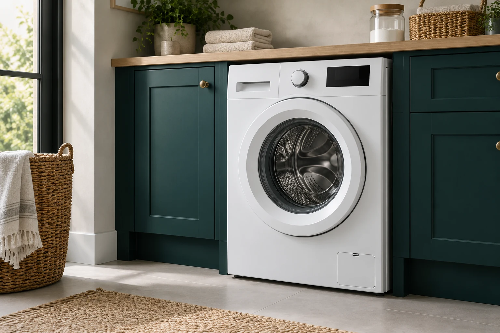
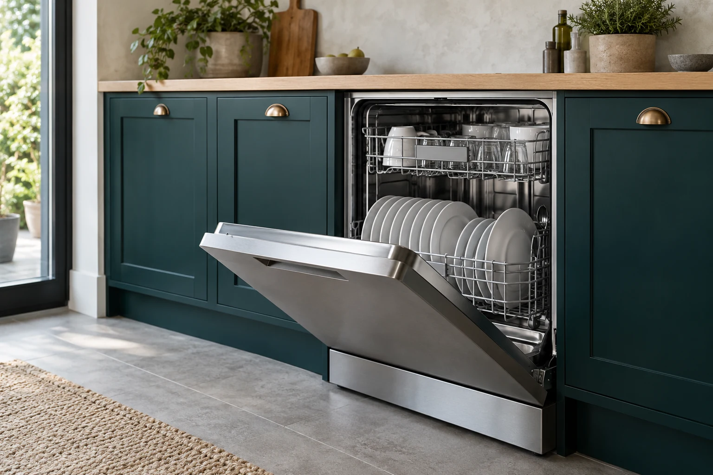
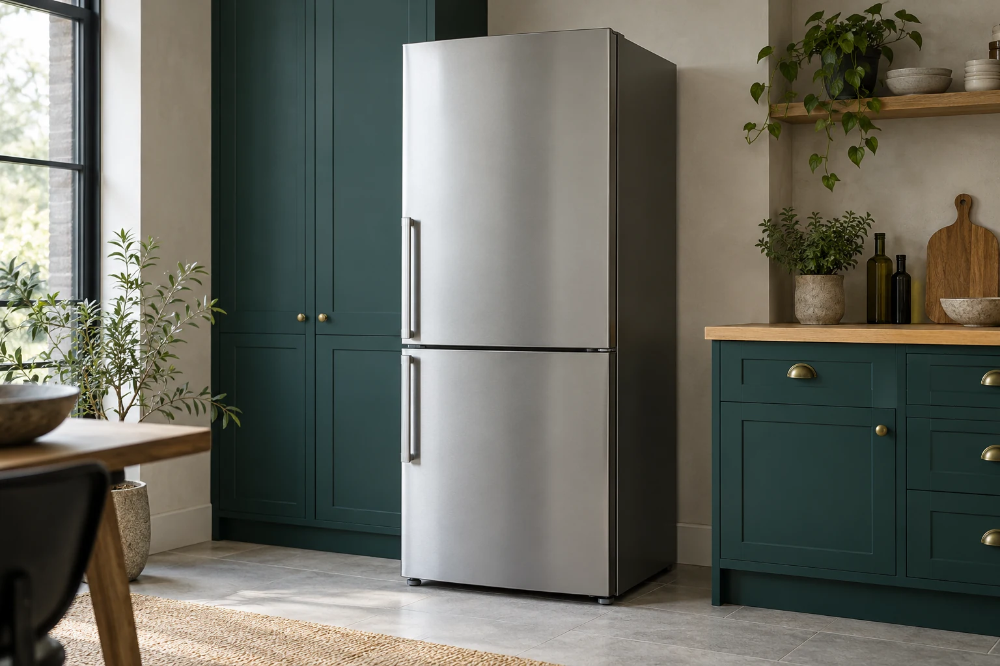

Стиральные машины
Не сливает, не греет, шумит, течет или зависает на программе.
Без лишнего ожидания и сюрпризов в цене.
Восстанавливаем стиральные машины, посудомоечные машины и холодильники. Приезжаем в день обращения, спокойно объясняем причину поломки и выполняем ремонт так, чтобы техника снова работала уверенно, а не до следующей недели.
Алматы и Алматинская область
Не сливает, не греет, шумит, течет или зависает на программе.
Плохо моет, не запускается, оставляет воду или показывает ошибку.
Не охлаждает, перемораживает, течет, шумит или работает без остановки.
Мы не распыляемся на все подряд. Основной фокус сервиса, выезда мастеров и склада комплектующих заточен под востребованную бытовую технику, которую чаще всего вызывают чинить в Алматы.

От простых засоров и проблем со сливом до замены ТЭНа, насоса, амортизаторов, модуля управления и подшипников.

Устраняем проблемы с набором и сливом воды, нагревом, сушкой, циркуляцией, датчиками, насосами и электроникой.

Работаем с капельными и No Frost моделями: компрессор, пусковое реле, утечки, датчики, вентиляторы и система оттайки.
Точная цена зависит от модели техники и причины неисправности. Но до начала ремонта мастер объясняет, что произошло, какие варианты решения есть и во сколько это обойдется.
Чистка системы слива, замена фильтра, проверка и замена насоса при необходимости.
Диагностика патрубков, манжеты люка, заливного тракта и узлов герметичности.
Проверка ТЭНа, датчика температуры, проводки и управляющего модуля.
Выезд по Алматы бесплатно при выполнении ремонта. По области стоимость маршрута заранее согласовываем.
Убираем засоры, восстанавливаем слив, проверяем помпу и клапаны.
Проверка нагрева, циркуляции воды, форсунок, фильтров и системы распределения.
Диагностика питания, кнопок, платы управления, замка двери и цепей запуска.
Если нужна деталь, подбираем совместимую или оригинальную запчасть под вашу модель и бюджет.
Проверяем компрессор, утечки, реле, термодатчики и производительность системы.
Ищем причину в системе оттайки, уплотнителях, вентиляции и датчиках.
Проверка терморежима, платы управления, контура охлаждения и состояния компрессора.
По холодильникам важно быстро диагностировать причину, чтобы не допустить нагрузки на компрессор и порчи продуктов.
Для клиента хороший мастер это не человек с чемоданом деталей, а специалист, который приезжает вовремя, не навязывает лишнего и оставляет после себя исправную технику и порядок.
Если ремонт экономически невыгоден, мастер так и скажет. Не тратим деньги клиента на временные решения без смысла.
Не меняем детали наугад. Сначала находим причину, затем предлагаем решение с понятным объяснением.
Работаем с типовыми и сложными неисправностями, включая электронные модули, компрессоры и узлы привода.
Фиксируем результат и отвечаем за установленные комплектующие. Клиент остается не с обещанием, а с понятной гарантией.
Закрываем заявки по Алматы в течение дня и заранее предупреждаем, если по области нужен точный временной интервал.
Бережно относимся к мебели, полу, фасадам кухни и встроенной технике, особенно при ремонте посудомоек и холодильников.
Чем быстрее мастер понимает симптомы, тем быстрее техника возвращается в рабочий режим. Поэтому мы выстраиваем процесс так, чтобы клиент заранее понимал, что будет происходить дальше.
Уточняем модель техники, симптомы, адрес и удобный интервал приезда мастера.
Мастер выезжает с инструментом и базовым набором востребованных деталей.
После диагностики объясняем, что вышло из строя, сколько стоит ремонт и какие есть варианты.
Выполняем ремонт, проверяем работу устройства и выдаем гарантию на согласованные работы.
Если вашего бренда нет в списке, это не значит, что мы с ним не работаем. Чаще всего достаточно назвать модель техники по телефону, чтобы сразу оценить сложность задачи и подготовить выезд.
Чаще всего к нам обращаются по запросам: ремонт стиральной машины на дому в Алматы, ремонт посудомоечной машины Bosch, ремонт холодильника No Frost и срочный выезд мастера по Алматинской области.
Принимаем заявки из центра, спальных районов, частного сектора и ближайших пригородов. Для области сразу говорим по времени выезда и логистике, чтобы не было неопределенности.
Рынок ремонта бытовой техники перегрет обещаниями. Поэтому наша задача не просто приехать быстрее других, а провести весь визит профессионально: от первого звонка до проверки техники после ремонта.
Когда стиральная машина перестает сливать воду, посудомойка не запускается, а холодильник начинает греть, человеку важны две вещи: скорость и уверенность, что его не будут раскручивать на ненужные расходы. Именно на этом и построен сервис ALMAFIX.
Мы заранее оговариваем условия выезда, работаем по Алматы и области, не прячем цену до последней минуты и не пугаем техническими терминами. В итоге клиент понимает, за что платит, а техника возвращается в рабочий режим без лишнего стресса.
Если вашего вопроса здесь нет, просто позвоните. Обычно по телефону уже можно понять, насколько срочная ситуация и что лучше сделать до приезда мастера.
Работаем с популярными брендами и моделями: LG, Samsung, Bosch, Indesit, Electrolux, Beko, Haier, Atlant, Gorenje, Whirlpool, Midea и другими. Если техника менее распространенная, лучше назвать модель заранее по телефону.
Большую часть типовых неисправностей устраняем в день выезда. Если нужна редкая запчасть или сложный электронный ремонт, мастер сразу объяснит сроки и согласует дальнейшие шаги.
При согласованном ремонте выезд и диагностика по Алматы бесплатны. По Алматинской области условия маршрута заранее озвучиваем до подтверждения заявки.
Сообщите об этом при звонке. Для встроенных посудомоек, холодильников и стиральных машин мастер заранее готовится к аккуратному доступу и демонтажу без лишнего риска для мебели и фасадов.
Да. В зависимости от вида работ и установленных комплектующих оформляем гарантию до 12 месяцев. Все условия проговариваются до завершения ремонта.
Если стиралка начала подтекать, посудомойка перестала отмывать, а холодильник держит температуру хуже обычного, лучше вызвать мастера до того, как поломка потянет за собой новые расходы.